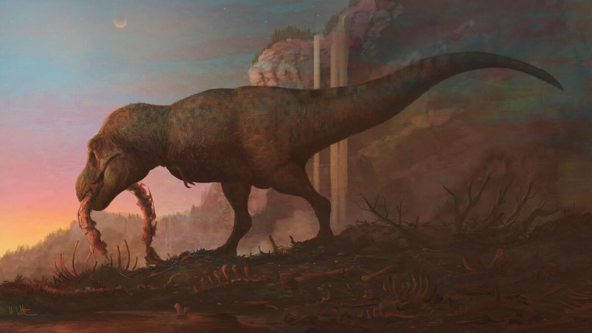
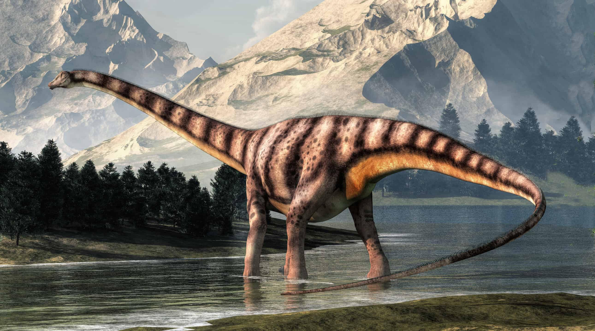
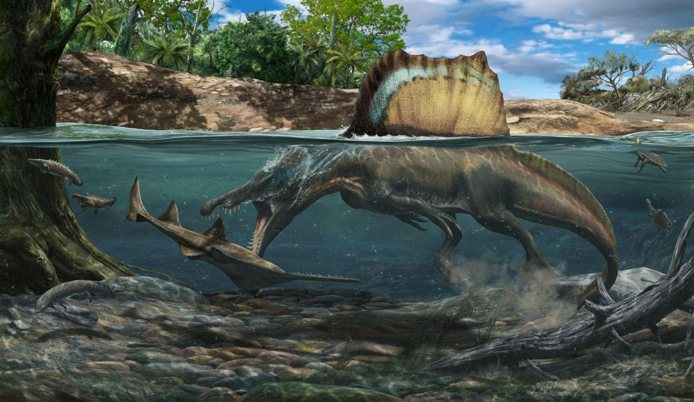

En esta pagina encontrarás juguetes de dinosaurios muy interesantes, de muy buena calidad y a muy buen precio, desde figuras de acción hasta un set de Lego completo.
Los dinosaurios fueron un grupo de reptiles que dominaron la Tierra durante la era Mesozoica, que abarcó unos 180 millones de años. Este grupo incluye una gran variedad de especies, algunas muy grandes como el Tyrannosaurus rex y otras más pequeñas como el Compsognathus. Los dinosaurios eran animales de sangre fría (aunque algunos eran probablemente de sangre caliente), y podían ser herbívoros o carnívoros. Vivieron en diferentes hábitats y se adaptaron a muchos tipos de ecosistemas, desde bosques hasta desiertos.



Jurassic Park y Jurassic World son dos franquicias cinematográficas que giran en torno a los dinosaurios y su re-creación en la era moderna,
aunque se desarrollan en diferentes períodos de tiempo dentro del mismo universo.
Jurassic Park (1993):
Es una película dirigida por Steven Spielberg y basada en la novela de Michael Crichton. La historia se centra en un parque temático en una isla donde científicos han logrado clonar dinosaurios usando ADN extraído de mosquitos preservados en ámbar.
La trama sigue a un grupo de personas que visitan el parque, solo para enfrentar el caos cuando los dinosaurios escapan y ponen en peligro a todos.
Jurassic World (2015):
Es una nueva serie de películas que actúa como secuela directa de la franquicia original. Se sitúa 22 años después de los eventos de Jurassic Park.
En esta serie, se crea un parque temático completamente funcional, el Jurassic World, en la misma isla de la película original, donde los visitantes pueden ver dinosaurios en su hábitat recreado.
La trama de las películas de Jurassic World sigue los eventos en los que la ciencia va demasiado lejos, con la creación de nuevos dinosaurios híbridos (como el Indominus rex), lo que lleva a nuevos desastres y caos cuando estos seres escapan o causan problemas.